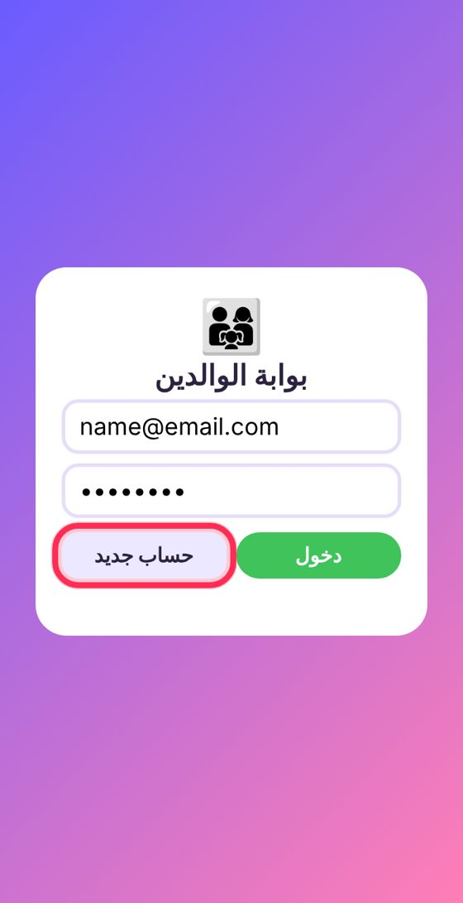
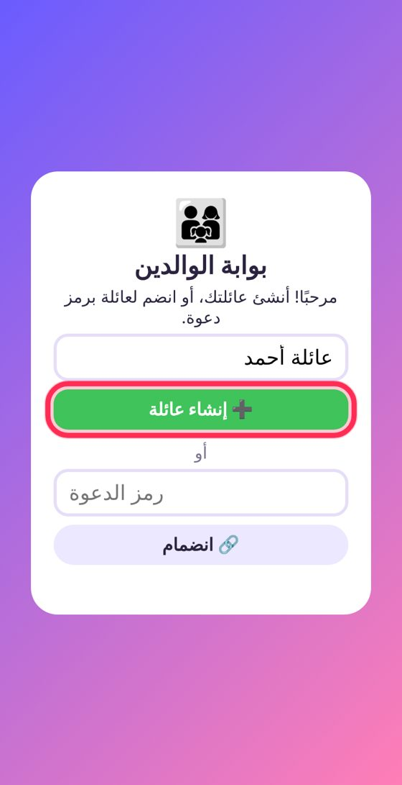
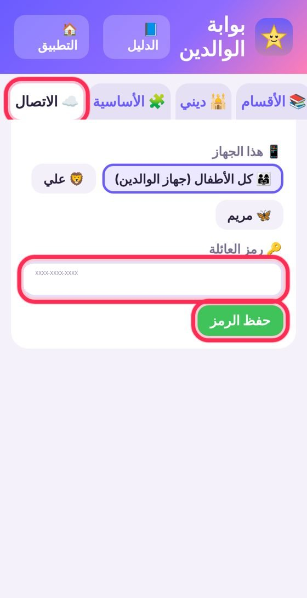
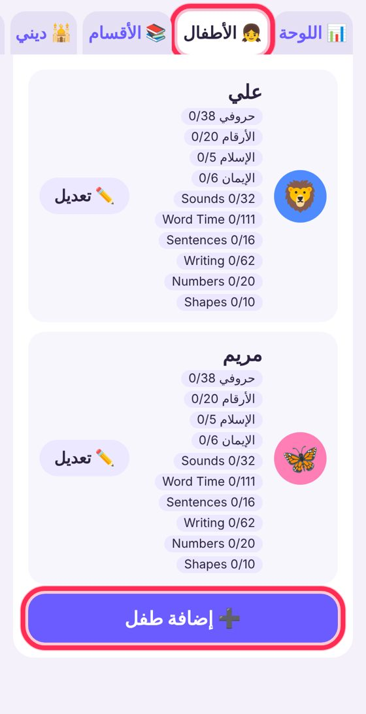
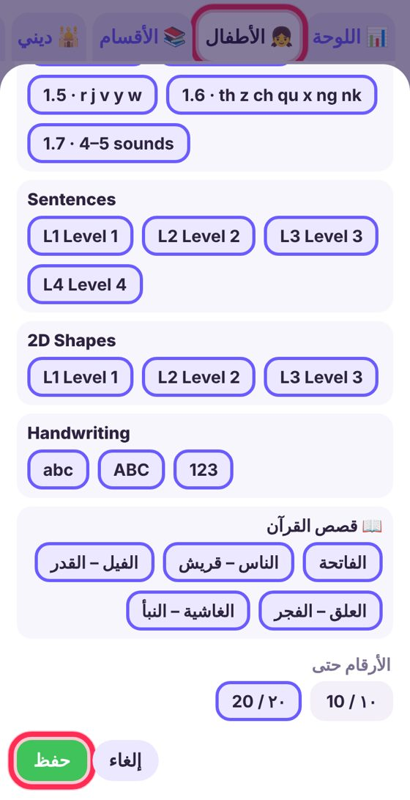
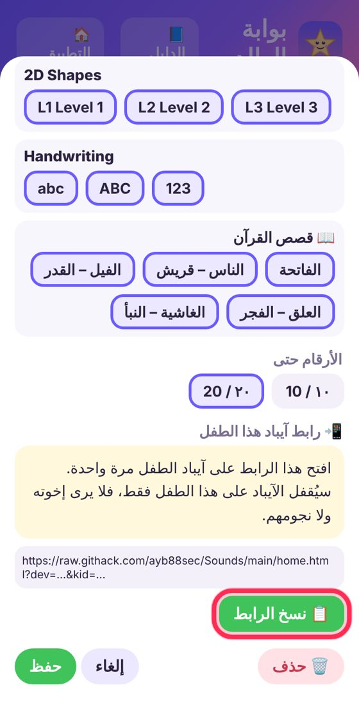
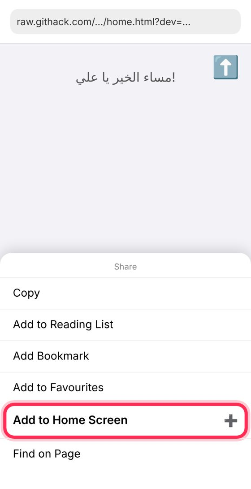
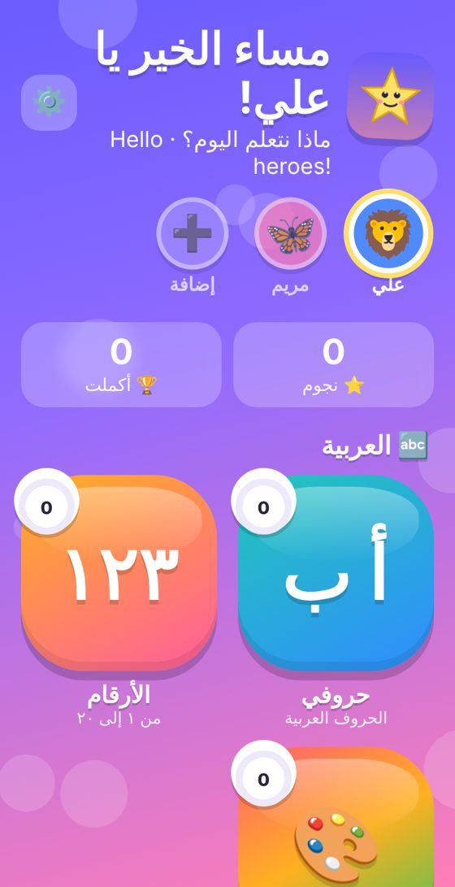
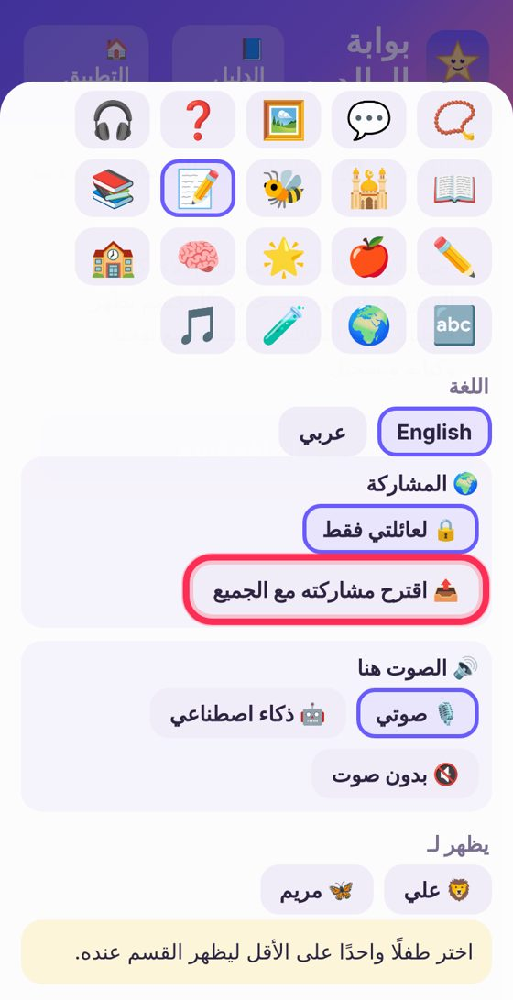

🌟 نجمة للعايلة
طريقة التسجيل وتجهيز آيباد العيال، خطوة بخطوة
1سوّ حساب
افتح البوابة على تيلفونك في Safari:
raw.githack.com/ayb88sec/Sounds/main/parent.html
اكتب إيميلك وكلمة سر (٨ حروف وفوق)، واضغط حساب جديد.

2سوّ عايلتك
اكتب اسم العايلة واضغط ➕ إنشاء عائلة.
لا تكتب شي في خانة رمز الدعوة.

3رمز العايلة
اضغط تبويب ☁️ الاتصال (اسحب التبويبات لليسار)، واكتب الرمز:
اطلبه من آمنة
واضغط حفظ الرمز.

4ضيف عيالك
اضغط تبويب 👧 الأطفال ثم ➕ إضافة طفل.

5إعدادات الياهل
اكتب الاسم، واختار الصورة واللون، والتطبيقات والمستويات اللي تناسبه، وبعدين اضغط حفظ.

6رابط الآيباد
اضغط ✏️ تعديل على الياهل، ثم 🔗 إنشاء رابط ← 📋 نسخ الرابط، وطرشه للآيباد (واتساب أو رسالة).
⚠️ لا تفتح الرابط على تيلفونك.

7على آيباد الياهل
افتح الرابط في Safari، واستوى لين يطلع اسم الياهل.
اضغط Share ⬆️ ← Add to Home Screen.
تأكد إن العنوان فيه ?dev= وبعدين اضغط Add.

8جاهز! 🎉
افتح نجمة من الأيقونة. الياهل يشوف اسمه وتطبيقاته بس، ونجومه توصلك في 📊 اللوحة.

9المحتوى المشترك 🌍
القرآن والأدعية والأصوات اللي تشاركها آمنة توصلكم بروحها.
إذا سويت قسم وتبا الكل يستفيد منه، اختار داخله 📤 اقترح مشاركته مع الجميع.
